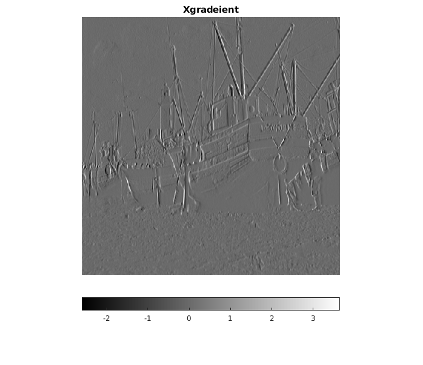
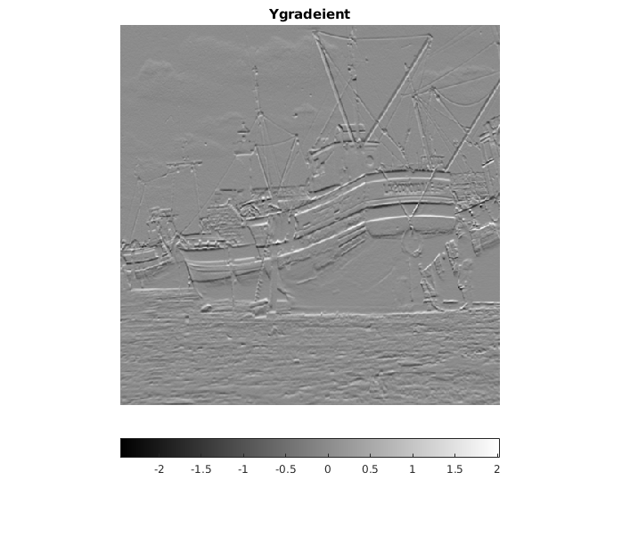
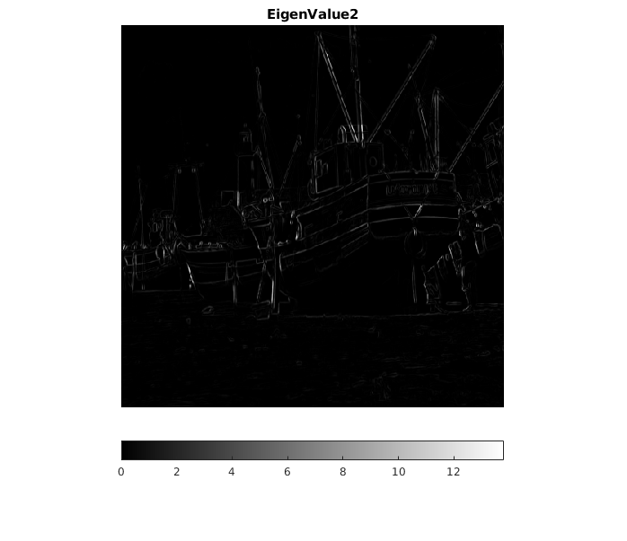
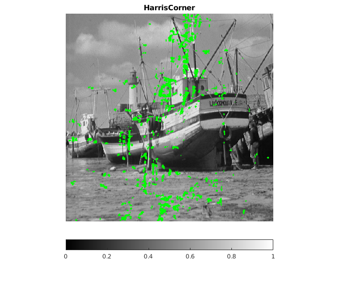

function myHarrisCornerDetector
A = load('../data/boat.mat');
X = struct2array(A);
[rows,colms] = size(X);
Y = contrastStretching(X);
[Ix,Iy] = imgradientxy(Y);
figure(1),imshow(Ix,[]);
title('Xgradeient');
colorbar('southoutside');
figure(2),imshow(Iy,[]);
title('Ygradeient');
colorbar('southoutside');
Ix2 = Ix.^2;
Iy2 = Iy.^2;
IxIy = Ix.*Iy;
W = fspecial('gaussian',5,2);
a = imfilter(Ix,W);
b = imfilter(Iy,W);
A = imfilter(Ix2,W);
B = imfilter(IxIy,W);
C = imfilter(Iy2,W);
H = zeros(rows,colms);
mytrace = Ix2 + Iy2;
deter = Ix2.*Iy2 - IxIy.*IxIy;
lambda1 = abs((mytrace - (mytrace.^2 - 4.*deter).^(1/2))/2);
lambda2 = (mytrace + (mytrace.^2 - 4.*deter).^(1/2))/2;
figure(3),imshow(lambda1,[]);
title('EigenValue1');
colorbar('southoutside');
figure(4),imshow(lambda2,[]);
title('EigenValue2');
colorbar('southoutside');
for i = 1:rows
for j = 1:colms
M = [A(i,j) B(i,j);B(i,j) C(i,j)];
H(i,j) = det(M) - 0.05*(trace(M)*trace(M));
end
end
av_rage = mean(mean(H));
thresold = abs(15*av_rage);
[H_row,H_colm] = find(H>thresold);
figure(5),imshow(Y,[])
hold on
for k = 1:size(H_row,1)
plot(H_row(k), H_colm(k), 'color', 'g','Marker','x','MarkerSize',0.1);
end
hold off
title('HarrisCorner');
colorbar('southoutside');
end
   